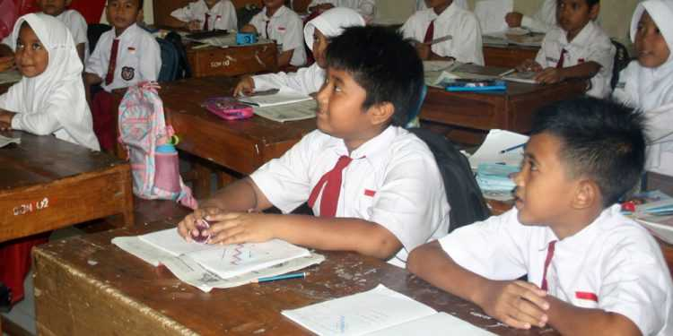

SIG SEKOLAH DASAR KABUPATEN BANYUMAS
SIG SEKOLAH DASAR KABUPATEN BANYUMAS

Data Jumlah Sekolah Sekolah Dasar (SD) di Bawah Kementerian Pendidikan dan Kebudayaan Menurut Kecamatan di Kabupaten Banyumas, 2020/2021 dan 2021/2022
(Sumber gambar: suarabanyumas.com)
Data dalam sistem informasi geografis ini diperoleh dari 1 data pada Badan Pusat Statistik (BPS) serta 1 data dari Data Pokok Pendidikan (DAPODIK) yakni sebagai berikut:
Sekolah Negeri
Sekolah Swasta
Murid SD Negeri
Murid SD Swasta
Data Sekolah Dasar (SD) di Kabupaten Banyumas
Berikut ini adalah data Jumlah SD Negeri dan Swasta, Murid SD Negeri dan Swasta di Kabupaten Banyumas, Provinsi Jawa Tengah pada tahun 2020/2021. Data diperoleh dari Badan Pusat Statistik (BPS) serta Data Pokok Pendidikan (DAPODIK). Data di urutkan berdasarkan kecamatan yang ada di Kabupaten Banyumas.
| No. | Kec | SD Negeri | SD Swasta | Murid Negeri | Murid Swasta |
|---|---|---|---|---|---|
| 1 | Wangon | 45 | - | 6674 | 0 |
| 2 | Tambak | 27 | 1 | 3096 | 229 |
| 3 | Sumpiuh | 30 | - | 3813 | 0 |
| 4 | Sumbang | 37 | 1 | 7569 | 48 |
| 5 | Somagede | 19 | - | 3074 | - |
| 6 | Sokaraja | 30 | 6 | 6762 | 1049 |
| 7 | Rawalo | 22 | 1 | 3372 | 233 |
| 8 | Purwokerto Utara | 20 | 2 | 3276 | 411 |
| 9 | Purwokerto Timur | 20 | 11 | 5317 | 3439 |
| 10 | Purwokerto Selatan | 23 | 5 | 4412 | 1324 |
| 11 | Purwokerto Barat | 18 | 4 | 3539 | 865 |
| 12 | Purwojati | 20 | - | 2558 | - |
| 13 | Pakuncen | 34 | 1 | 4567 | 136 |
| 14 | Patikraja | 28 | - | 3458 | - |
| 15 | Lumbir | 35 | - | 4315 | - |
| 16 | Kemranjen | 33 | - | 4059 | - |
| 17 | Kembaran | 29 | 2 | 5515 | 424 |
| 18 | Kedungbanteng | 26 | 3 | 4229 | 389 |
| 19 | Kebasen | 29 | - | 4960 | - |
| 20 | Karanglewas | 21 | - | 3921 | - |
| 21 | Kalibagor | 21 | 2 | 4531 | 129 |
| 22 | Jatilawang | 36 | - | 4990 | - |
| 23 | Gumelar | 32 | - | 3925 | - |
| 24 | Cilongok | 43 | 2 | 7157 | 491 |
| 25 | Baturraden | 24 | 3 | 4320 | 331 |
| 26 | Banyumas | 31 | 3 | 4748 | 446 |
| 27 | Ajibarang | 33 | 2 | 6363 | 168 |
| TOTAL | 768 | 49 | 124.520 | 10.112 | |